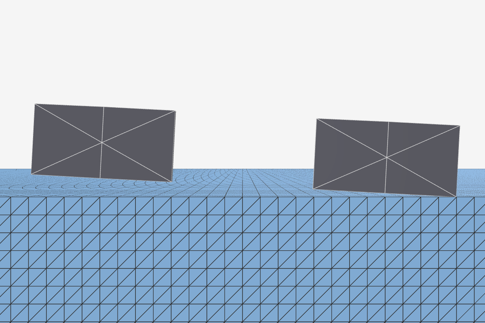
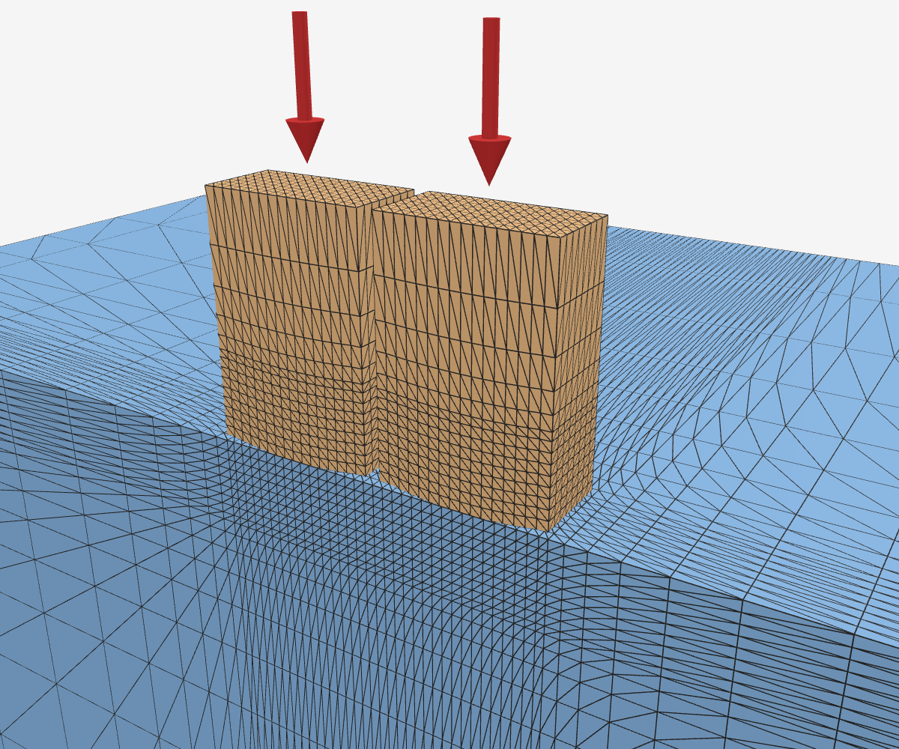
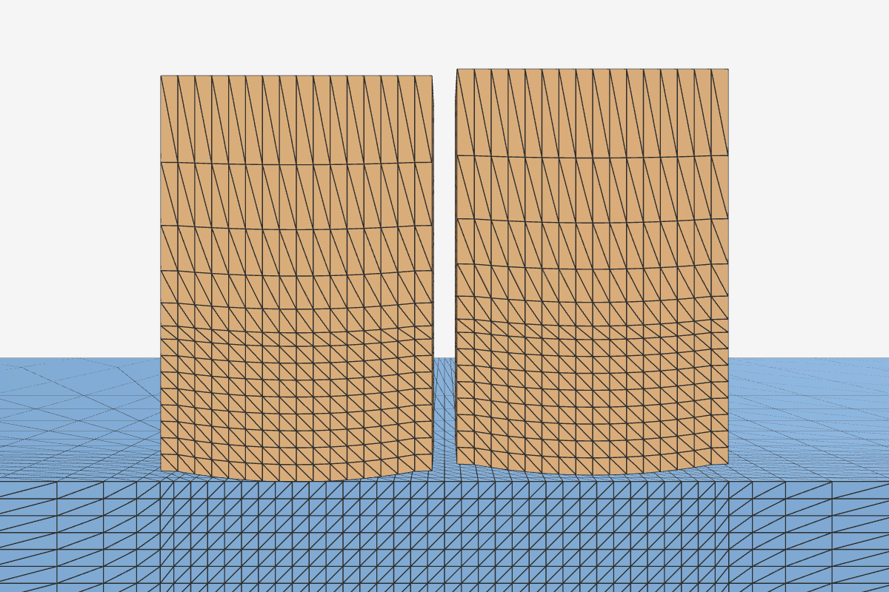
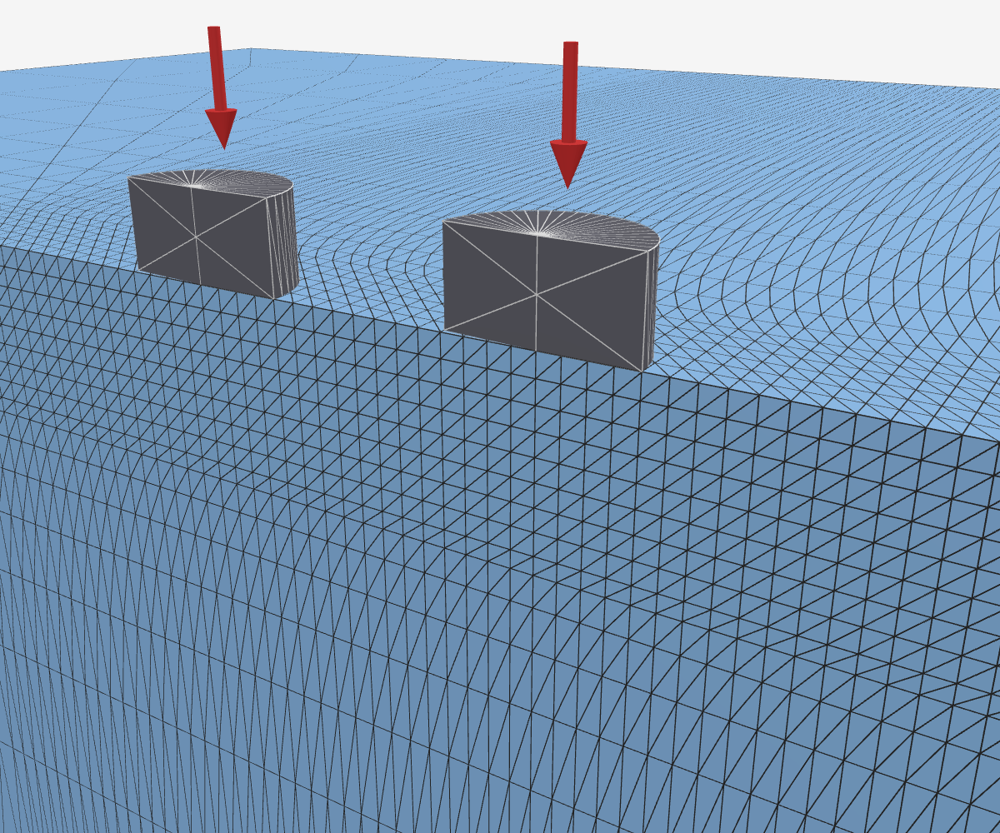
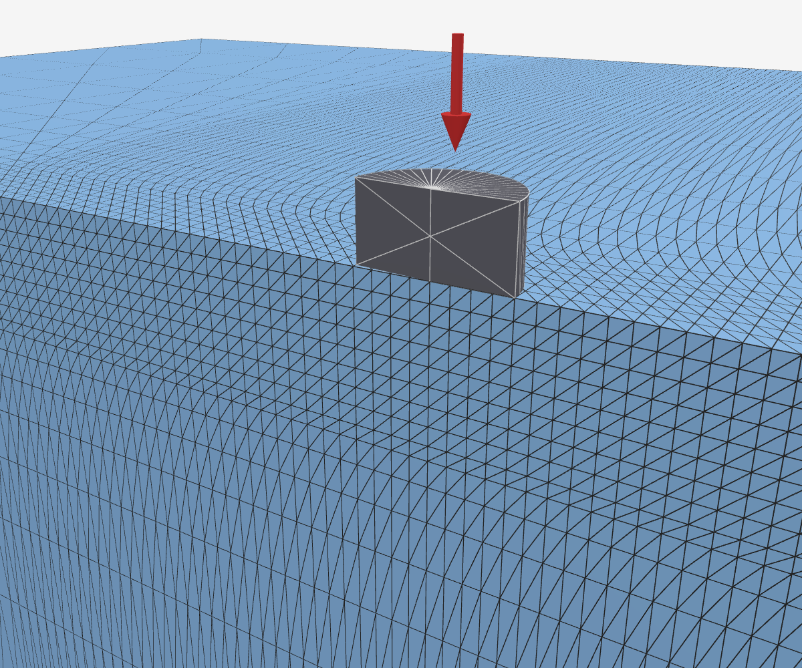

- 要解决的问题：精细仿真（IPC 接触 + 精细有限元）准确但慢；粗模型（刚体、仿射体）快，但没有接触处的局部变形；我们用神经网络学一项碰撞能量 \(U_c\) 补上〔0.6 分〕
- 标签：IPC + 精细有限元算出的 \(U_c\)，是网络的训练目标〔0.2 分〕
- hydro（hydroelastic 接触）：对比方法，每个物体内预设压力场，接触力由两物体重叠区内的压力算出；Genesis 是实现它的开源仿真器〔0.4 分〕
- hydro++：hydro 在自身定义下做到最强，每个物体一张三维静态场，形状全交给拟合〔0.3 分〕
- 裁判：独立于标签和 hydro 的弹性解：解析式、边界元数值解、轴对称有限元〔0.3 分〕
本页结论：按 U_snk1，标签对独立裁判在约 1%–2% 以内（斜压最浅一档除外）；hydro++ 的死结是「同一批物体只多一个接触，能量被迫相加」，至少错 7.49%（两个软体 2.0%–2.7%）；软–软网络以「缝隙 + 合成模量」为骨架。〔0.5 分〕
标签代码：两个软体
- 压头与被压块现在都可以是有限元软体：此前压头只能是刚体，软–软接触无法生成标签〔0.4 分〕
- 压头取「球冠头厚块」：底面削成半径 \(R\) 的球冠，顶面整体下推；可与被压块一起加大、外推到 Hertz 要求的无限大〔0.5 分〕
- 软–软时须收紧求解器的收敛条件：默认设置下牛顿迭代过早终止，同一配置两次运行在最小压深处为 Hertz 的 1.68 倍与 1.85 倍；收紧后解唯一，耗时多约 13%〔0.5 分〕
设置：两物体均为四面体网格，接触处加密、向外逐层变粗；块底面固定；压头顶面按位移驱动下压。本页所有标签均采用收紧后的收敛设置。
 软球冠头厚块（浅橙）压软块（浅蓝）；剖开一半显示网格，红箭头为下压方向，底部灰板表示固定（看图 0.5 分）
软球冠头厚块（浅橙）压软块（浅蓝）；剖开一半显示网格，红箭头为下压方向，底部灰板表示固定（看图 0.5 分）
 接触区放大：两侧接触处网格加密（看图 0.5 分）
接触区放大：两侧接触处网格加密（看图 0.5 分）
标签代码已覆盖软–软接触；两个软体时牛顿迭代须收紧到真正收敛，否则标签不可复现。〔0.2 分〕
软压头压软块：标签与 Hertz、独立有限元裁判
设置：压头 / 块的杨氏模量四组——几乎刚的压头（1e8 / 1e5）、硬 10 倍的压头（1e6 / 1e5）、两侧等软（1e5 / 1e5）、硬度对调（1e5 / 1e6）；ν 均为 0.3；R = 1，压深 0.006–0.024（最小压深 0.004 网格外推不成立，剔除）。每个值先外推到理想情形：IPC 在两表面间保留的间隙厚度 → 0、块 → 无限大、网格 → 无限细。
看表 0.4 分：
| 压头 / 块 |
标签 ÷ Hertz |
| 几乎刚的压头 |
0.996–1.007 |
| 硬 10 倍的压头 |
0.993–1.004 |
| 两侧等软 |
0.980–0.990 |
| 硬度对调（软压头压硬块） |
0.970–0.977 |
 硬压头（深橙）压软块（浅蓝）（看图 0.3 分）
硬压头（深橙）压软块（浅蓝）（看图 0.3 分）
 硬度对调：软压头（浅橙）压硬块（深蓝），几何与加载不变（看图 0.3 分）
硬度对调：软压头（浅橙）压硬块（深蓝），几何与加载不变（看图 0.3 分）
 硬度对调、压深 0.024 时的位移大小（真实比例，剖面）：软压头被压平，硬块几乎不动（看图 0.3 分）
硬度对调、压深 0.024 时的位移大小（真实比例，剖面）：软压头被压平，硬块几乎不动（看图 0.3 分）
- 偏低量 ≈ \(s\cdot k\)〔1.0 分〕
- \(s\) 为压头承担的柔度份额：压头越软 → \(s\) 越大 → 偏低越多（硬 10 倍 0.09，等软 0.5，对调 0.91）
- \(k\approx0.27\,a/R\)：接触圈半径 \(a\) 相对球冠半径 \(R\) 越大 → 偏低越多，因为接触区越宽，球冠越不像「无限大平面上的一小块抛物面」
- 软压头压刚性地面同样出现，只看 \(a/R\)，与网格无关
- 软压头压刚面上，独立裁判确认标签正确：轴对称有限元与标签逐压深相差不超过 0.15 个百分点〔0.6 分〕
- 轴对称有限元只算过轴的一个截面，直接解静力平衡，与标签只共用几何与材料公式
- 偏低是该几何的真解：软球冠压刚面（块外推到无限大）比 Hertz 低 1.6% → 3.6%，刚球压平块只差 0.2% 以内〔0.6 分〕
- 约 62%–74% 来自有限变形：换成线弹性材料，裁判给出 0.994 → 0.988
设置：裁判与标签用同一球冠头几何与同一材料公式；与标签的比较量为「软球冠压刚面 ÷ 刚球压同尺寸软平块」，两边同法相除，以消去有限块尺寸的影响；1.6% → 3.6% 为软球冠压刚面单独外推到无限大块的值（刚球压平块 ≈ 1，按比值外推为 1.7% → 3.6%，几乎相同）。软–软没有独立有限元裁判，由 \(s\cdot k\) 规律间接支持。\(k\) 在三组中近似相同；球冠半径加倍时相同 \(a/R\) 下差 ≤ 0.11%。轴对称有限元转一周即三维，无接触间隙。
 独立裁判的计算域：轴对称网格，软球冠头压刚性平面（左为整体，右为接触区放大；关于轴镜像显示）（看图 0.3 分）
独立裁判的计算域：轴对称网格，软球冠头压刚性平面（左为整体，右为接触区放大；关于轴镜像显示）（看图 0.3 分）
已定：软压头标签的验收判据为先除以近刚压头结果、再对 \(a/R\) 外推到 0，截距与 1 相差 ≤ 1%。〔0.2 分〕
软压头压刚面时标签与独立有限元裁判差 ≤ 0.15 个百分点，两体 Hertz 高估 1.6%–3.6%；软–软偏低 ≈ s·k，主体来自有限变形。〔0.1 分〕
两个相同软球同时放大一倍
- Hertz：同一压深下能量变为 √2 ≈ 1.414 倍〔0.5 分〕
- 两球对压等价于等效球（半径 \(R^*=R/2\)）压平面；能量 ∝ \(\sqrt{R^*}\)：球越大 → 能量越大，但只按开方涨，因为接触圈只按 \(\sqrt R\) 变宽
- 按 hydro 的公式只能是 1 倍或 2 倍：力 = 压力梯度 × 重叠体积，球放大一倍重叠体积 ×2；场按半径归一 → 梯度减半 → 1 倍，按厚度归一 → 2 倍〔0.5 分〕
- 标签：能量比 1.411–1.438，6 个压深都在 √2 的 2% 以内；两物体各担一半能量，偏差 ≤ 0.0015〔0.4 分〕
设置：两个相同的球冠头厚块顶对顶对压，E = 1e5、ν = 0.3；比较 R = 1 与 R = 2，其余条件全同；压深 0.004–0.024 共 6 档。网格外推的收敛阶取假定值 0.8–2，结论不变（2% 以内依赖这一假设）；按三档网格实测收敛阶时只有 3 个压深可用，其中 0.024 为 √2 的 1.021 倍。最小压深 0.004 在这里保留：假定收敛阶时只用粗、中两档网格，不用在该压深分辨不了接触圈的特粗档。
 R = 1：两个软球冠头厚块顶对顶，上块下压、下块底面固定（看图 0.5 分）
R = 1：两个软球冠头厚块顶对顶，上块下压、下块底面固定（看图 0.5 分）
 R = 2：同一设置，球冠半径加倍（看图 0.5 分）
R = 2：同一设置，球冠半径加倍（看图 0.5 分）
两软球同时放大一倍，标签能量变为 1.41–1.44 倍，与 Hertz 的 √2 一致；hydro 的公式只能给出 1 倍或 2 倍。〔0.1 分〕
更多形状与独立裁判：平底、圆锥、薄层、斜压、两个压头
- 平底、薄层、圆锥、幂律：按 U_snk1，标签 ÷ 解析都在 1% 左右〔1.2 分〕
- 平底 1.001–1.005，薄层 1.002–1.007，圆锥 1.004–1.011，\(k\) = 1.5 为 0.994–1.006
- 这是两项相反的有限变形差别抵消后的净值；按小应变能比偏高至多约 3%，随压深增大
- 压头 \(y=c\,r^k\) 的能量按压深的 \(2+1/k\) 次方涨：压头越尖 → 次方越大，因为接触面积涨得越快；标签 2.975 / 2.652 / 2.260，解析 3 / 2.667 / 2.25；按球调好的 hydro 最大误差 26%–68%
- 斜压 3° 的平底凸台：新增边界元裁判〔0.9 分〕
- 边界元：块表面切成小方格，用半空间弹性解算每格压强让各处下沉多少，再解哪些格接触；与 IPC、有限元无关
- 按 U_snk1、扣除压深读数偏差后，0.006、0.012 两档对边界元在 ±2% 以内（0.94 / 1.02 / 1.01）；0.003 标签仍偏低，这时只有前缘一条窄月牙接触，推测标签网格不够细
- 「成对 = 单个」10a 的 2.1% 已查清：块能量有两种状态、差 0.43%，原因未明；两种状态下比值 0.9984–1.0034，2.1% 是两步外推放大的；判据改为同网格原值比，因为外推越多步 → 噪声放大越多〔0.6 分〕
- 成对普遍高 0.2%–0.4%：压深只按平移记、漏了微小转动，扣掉后残差 ±0.2% 以内
- 夹在中间（上下两块板同时压一个软压头）效应不到 1%，不造标签〔0.3 分〕
- 两个软压头同压软块：\(c\) = 同时压 ÷ 两次单独压之和；块越大 → \(c\) 越接近边界元，差距主要来自有限块〔0.4 分〕
- 曲面与两种模量块的标签对椭圆 Hertz〔0.7 分〕
- 平面块配两种模量：标签 ÷ 解析 ≤ 0.17%，过门槛
- 环面、波浪面：差 1.0%–1.4%，没过 0.5% 门槛；凸处偏低、凹处偏高，偏在哪一侧待查；两种独立裁判已做，有限元自身验证还差最后一步；另查出块网格外区偏刚约 0.3%–0.5%（标签和有限元共用同一个网格生成器），外区加密后的完整验证正在跑（推断，§12.10(f)）
- 比值类结论不受影响：恒等式、两软压头的 \(c\)、两种模量块、死结下界〔0.2 分〕

斜压 3°（剖面正视）：两凸台整体倾斜，右凸台右缘落到块面上，左凸台底面比块面高约 0.021，压到最深 0.012 也碰不到（看图 0.3 分）

两个软球冠头厚块（浅橙）并排同时下压同一软块（浅蓝），两压头之间留有空隙、互不接触（看图 0.3 分）

只压一个（剖面正视）：右压头不下压、比左压头整体高 0.01，与块面之间看得到一条缝（看图 0.3 分）
看表 1.0 分（两张）：
| 斜压压深 |
边界元 |
标签（凸台在 0.2 / 0.5，原始读数） |
标签 ÷ 边界元（扣除读数偏差） |
接触占底面 |
| 0.003 |
0.1858–0.1881 |
0.174 / 0.173 |
0.94 |
11% |
| 0.006 |
0.2872–0.2895 |
0.292 / 0.286 |
1.02 |
31% |
| 0.012 |
0.4411–0.4432 |
0.444 / 0.447 |
1.01 |
79% |
注：标签记压深时只用了压头的平移，斜压时压头被掀回约 1e-3°，实际压深比记录的浅，单凸台能量读数因此偏低约 0.4%；比值列为上调约 0.4% 后的值（凸台在 0.2），扣除前为 0.93 / 1.01 / 1.00。
| 两软压头压深 |
\(c\)（块宽 2.4） |
\(c\)（块宽 4.8） |
\(c\)（最佳估计） |
\(c\)（边界元） |
hydro++ 下界：标签 / 边界元 |
| 0.006 |
0.9687 |
0.9647 |
0.96015 |
0.95538 |
2.03% / 2.28% |
| 0.009 |
0.9623 |
0.9575 |
0.95295 |
0.94587 |
2.41% / 2.78% |
| 0.012 |
0.9576 |
0.9522 |
0.94680 |
0.93800 |
2.73% / 3.20% |
设置：字段：本节「标签 ÷ 解析 / 边界元」都用 U_snk1（求解器最小化的 snk1 能）。IPC 标签是有限变形解，裁判是线弹性小变形解，两者有两项方向相反的差别：接触条件加在变形后的位置上，使能量偏高（球约 +1.5% ~ +2.2%，平底约 0.18·δ/a）；snk1 能量比小应变能低约 1.2%。按小应变能 U 比：平底 +0.2%–2.6%、圆锥 +1.6%–2.4%、k = 1.5 +0.9%–3.0%，薄层方向相反（0.989–1.001），斜压见附录。比值类（恒等式、两软压头 c、两种模量块）两侧同含这两项，在比值里约掉。曲面两种独立裁判为精确间隙边界元与线弹性有限元；有限元对 Hertz 的自检还差块宽 4.8 加细一档。更多形状均为三档网格外推。平底 a = 0.25、0.5、1，收敛阶约 1，源于边缘应力奇异；a = 1 原先偶有一个压深偏高 0.4%–2.5%，改成「先停稳再取能量」后同参数两遍只差 ≤ 4.5e-5（停稳判据：连续 3 帧压头位移 ÷ 压深 < 3e-5、能量相对变化 < 1e-4，最多等 60 帧）。圆锥与幂律依次为 k = 1 / 1.5 / 4，实测收敛阶 1.6–1.95；hydro 的 26% / 35% / 68% 依次对应 k = 1 / 1.5 / 4。斜压表中数值为 \(X=U/(E^*a\delta^2)\)，a = 0.1；边界元用 Love 的均布方块影响系数，五档网格（a/h = 16–64），范围取两种估计、三种外推；自检：整片接触时对闭式解差 ≤ 0.05%，成对 ÷ 单个 = 1.000000。压深 0.003 时接触月牙宽约 0.042（底面的 11%），标签最细网格在月牙宽度方向只有约 7 个单元（未验证是否就是原因）。10a 坏点：压深 0.006 单凸台同代码同参数三次运行块能量 0.1423251 / 0.1417086 / 0.1423233，两种状态差 0.43%（压深、间隙、接触半径、转角都几乎不变），经间隙厚度外推与网格外推放大成 2.1%；同网格原值比在高态为 0.9984、低态为 1.0027–1.0034；新判据为同网格、同间隙厚度的原值比，4a 各格 1.0014–1.0021、10a 各格 1.0019–1.0044。成对偏高的原因：斜压时合力不过压头质心，压头被掀回约 1e-3°，实测最低点上抬 4.1 / 9.6 / 17.4 μm，单凸台能量读数因此偏低约 0.4%（水平压入只差 ≤ 0.004%）。夹在中间：一个软球冠头厚块被上下两块板对称压，对比只压一侧、另一侧固定；轴对称有限元给出「夹压 ÷ 单压」0.9909–0.9963（压深 0.004–0.024，网格 nr128 与 nr256 差 ≤ 4e-5），事先定的门槛为 1%；压头厚，上下两个接触区离得远。两个软压头：R = 1、E = 1e5 的球冠头厚块，块 E = 1e5，中心距 4a（按压深 0.012 的接触半径定）；块宽 2.4 时标签的 \(1-c\) 只有边界元的 68%；最佳估计 = 块宽 2.4、4.8 按 1/块宽 外推到无限大，再加细档网格修正（细档 − 粗档），此时为 86%–89%；不确定度 \(c\) ±0.003、下界 ±0.15 个百分点；剩下的差距主要是压头为有限大小的软柱（单压能量只有两体 Hertz 的 0.93–0.97）。曲面标签：环面、波浪面块各配 R = 1、0.5 的压头，标签 ÷ 解析 = 曲面 ÷ 平面孪生；凸的方向（环面顶部、波峰）偏低，凹的方向（环面内赤道、波谷）偏高，R = 1 比 R = 0.5 大；块尺寸敏感性 ≤ 0.23 个百分点。
按 U_snk1，平底、圆锥、幂律、薄层上标签对独立裁判约 1% 以内，斜压（0.006、0.012）扣除读数偏差后 ±2% 以内（两项抵消后的净值）；比值类结论不受影响；两个软压头的相互影响随块加大向边界元靠拢。〔0.1 分〕
Genesis 中 hydro 的四种刚软组合
- hydro 的压力场：每个物体内部预设 \(p=\dfrac{E_h}{D}\times\)（离表面的深度）〔0.4 分〕
- \(E_h\) 为人工设定的压力场模量，与杨氏模量无关；\(D\) 为物体内离表面最远的距离；梯度 \(E_h/D\) 越大 → 同样压深压强越大 → 陷得越浅
- 接触面取两侧压强相等处；两侧梯度像两根弹簧串联，较软的一侧主导
- 软–软：两侧压力场模量各改 10 倍，压深不变〔0.8 分〕
- 串联公式预言两侧同增 10 倍压深缩为 0.316 倍；Genesis 实测 0.9999 倍
- 原因：Genesis 软–软的接触力 = 全局参数 \(H\) × 重叠体积，\(E_h\) 在力中约去，只决定等压面落在哪个物体内
设置：两个有限元物体，球（R = 0.1 m、1 kg）靠自重静置在底面固定的块（0.3 × 0.3 × 0.2 m）上，量球陷入块的深度；杨氏模量取 1e8 Pa，弹性变形可忽略，量到的即 hydro 自身的压深；球与块各取 \(E_h\) = 1e5 或 1e6 Pa 四种组合，同一网格（球面细分 5 级）。四种组合压深在 1.784–1.787 mm；等压面落在球内的份额随 \(E_h\) 从 0.10 变到 0.91。
软–软，两侧 E_h = 1e5（看视频 0.4 分）
两侧 E_h 均改为 1e6：压深不变（看视频 0.4 分）
- 刚–软 ⇄ 软–刚：对调哪一侧是软的，结果改变；Hertz 对两物体对称，对调后不变〔0.9 分〕
- 场在块内：力正比于重叠体积、即正比于球半径，小球陷得更深
- 场在球内：梯度 \(E_h/R\) 随球增大而减小，抵消重叠体积的增大
看表 0.5 分：
|
Genesis 实测 |
Hertz |
| 刚球压软块（场在块内）：球半径 0.1 → 0.05，压深变为 |
1.428 倍 |
1.260 倍 |
| 软球压刚性地面（场在球内）：同上 |
1.015 倍 |
1.260 倍 |
| 对调（软球压地面 ÷ 刚球压软块） |
R 0.05：0.696；R 0.1：0.980 |
1 |
设置：软的一方杨氏模量 1e7 Pa、\(E_h\) = 1e5 Pa；球 1 kg 靠自重静置；比较球半径 0.05 与 0.1 m。
刚球（R = 0.05 m）压软块（看视频 0.4 分）
软球（R = 0.05 m）压刚性地面（看视频 0.4 分）
- 刚–刚：半径依赖仍与 Hertz 不同：球半径 0.05 → 0.2 m，压深 3.041 → 2.155 mm，比值 1.411；串联公式 1.417，Hertz 1.587〔0.5 分〕
设置：带压力场的刚球（1 kg）靠自重静置在固定的带场刚体盒（0.3 × 0.3 × 0.2 m）上。
刚–刚：带场刚球（R = 0.05 m）压带场刚体盒（看视频 0.4 分）
Genesis 中 hydro 四种刚软组合都按自身公式给出压深（差 3% 以内）；半径依赖与软硬对调的响应都与弹性解不同，差异来自模型定义。〔0.2 分〕
hydro++：每个物体一张三维静态场，死结在哪
- hydro++ 的定义〔0.6 分〕
- 每个物体（含压头）一张固定在物体上的三维静态压力场：非负、随深度不减，可随物体自身表面位置任意变，不随对手、位置、时间变
- 能量 \(U=\int_{\text{重叠区}}\min(p_A,p_B)\,dV\)：每点取两侧较小的压强，所以较软一侧主导；场的形状全交给拟合
- 死结：同一批物体、同一位置，只多一个接触〔1.6 分〕
- 一个块、两个独立平底压头 P、Q：① P 单独压，② Q 单独压，③ 两个同时压
- hydro：两处重叠区不相交，③ = ① + ②，场怎么取都改不了
- 真实弹性体：P 压下去旁边表面跟着陷，③ = \(c\) ×（① + ②）；边界元 \(c\) = 0.8606（中心距 4a）/ 0.9399（10a），两压头越近 → \(c\) 越小，因为互相带着下陷越多
- 任何场至少错 \(\dfrac{1-c}{1+c}\) = 7.49%（4a）/ 3.10%（10a）：\(c\) 越小 → 下界越大；最好也只能让单独压偏低、同时压偏高同样多
- 实测正好停在下界上〔1.0 分〕
- 块和两个压头都用最自由的三维场，4 个初值全部停在 7.56% / 3.13%；4a 加上斜压一起拟仍是 7.56%
- 拟准哪一部分，另一部分就按推导的量和方向错：能对上这个构型，就一定对不上另一个

死结 ③ 同时压：两个平底凸台（深灰，中心距 4a）在同一位置、同一压深一起压软块，两个都画了下压箭头（看图 0.3 分）

死结 ② 只压一个：同一个凸台、同一位置，旁边少了一个接触，块和压深都不变（看图 0.3 分）
看表 1.0 分：
| 训练 → 测试 |
训练误差 |
测试误差 4a |
测试误差 10a |
推导值 |
| 三种情况一起拟 |
4a 7.56%，10a 3.13%（4 个初值相同） |
— |
— |
下界 7.49% / 3.10% |
| 只训两次单独压 → 测同时压 |
≤ 1.3e-15 |
+16.19% |
+6.40% |
\(1/c-1\) = 16.2% / 6.4% |
| 只训同时压 + P 单独压 → 测 Q 单独压 |
≤ 1.8e-15 |
−27.87% |
−12.03% |
\(2c-2\) = −27.9% / −12.0% |
- 两个物体都软时死结仍在：两个软球冠压头同压软块，下界 2.3%–3.2%（边界元）/ 2.0%–2.7%（标签）；比平底小，因为一半变形发生在球里，传给另一处的少〔0.6 分〕
- 之前「训练集内拟不准」的论证为什么不再算数〔1.2 分〕
- 每给场多一份自由度，冲突就被拟掉：只随深度变的场斜压加水平压至少错 28%–35%，场随压头位置变后只剩 1.11%
- 场 \(p=c\,s/r\)（\(s\) 深度，\(r\) 到接触轴的距离）让任意两球配对都精确等于 Hertz：离轴越近 → 弹簧越硬，大球多出的重叠落在软的外圈
- 循环赛 198 个构型，场有 18720 个参数，拟到 5.1e-15：有限训练集总能背下来；死结的物体和场不变，参数再多也改不了相加
- T5 留出配对：辅助的泛化测试〔0.8 分〕
- 测试的那一对，两个物体各自见过、唯独没见过这个组合；事先写死：训练 < 1% 而测试 > 10% 即「能记住、学不会」
- 按验证集选 λ = 0.3（累计 390000 步，撞步数上限，未收敛）：训练 0.0007%，验证 5.50%，三组测试 11.74% / 8.23% / 18.61%，判据成立（600000 步接续在跑，会后更新）
- 多跑下去训练误差趋近 0，没见过的配对却一直停在 12% 左右不降
- 原版 hydro（压头刚性、不带场）只作消融：能量 ∝ \(R\)、∝ \(a^2\)，真值 ∝ \(\sqrt R\)、∝ \(a\)，半径越大差得越多，差 2 倍至少错 17.16%；薄层共用一张场的 10.1% 在各学一张后消失〔0.5 分〕
- 我们这边：网络输入这一对的缝隙与 \(E^*\)，另有接触区之间随距离减弱的交互项；效果待网络训好再测〔0.2 分〕
设置：死结实验沿用两平底凸台的边界元裁判（压深 0.003 / 0.006 / 0.012，a = 0.1），左右凸台在拟合中是两个独立物体，没有「双凸台」物体；位移控制下两个独立压头压到同一深度与一个双凸台刚体是同一个力学问题。下界推导：三个相对误差都 ≤ ε 时须同时满足 \(2c(1-\varepsilon)\le2(1+\varepsilon)\) 与 \(2(1-\varepsilon)\le2c(1+\varepsilon)\)。拟合目标为最大误差的 32 次方平均近似，所以比严格下界略高（7.56 对 7.49）；4 个初值为三组精确解初值加一个随机初值，4 个初值的最大误差一致到 5 位有效数字；4a 时单独压 −7.43%、同时压 +7.56%。软–软为两个 R = 1 的球冠头厚块，与块同为 E = 1e5，中心距 4a；下界在压深 0.006 / 0.009 / 0.012 依次为边界元 2.28% / 2.78% / 3.20%、标签 2.03% / 2.41% / 2.73%，由 \(c\) 代入同一公式，标签 \(c\) 取最佳估计（块宽外推到无限大加细档网格修正，见第 4 节），不确定度约 ±0.15 个百分点。留出配对：循环赛 15 个物体、102 对，训练 68 对、验证 10 对、测试 24 对；三组测试依次为没见过的配对、没见过的压深、平面上的新位置。新半径同理：中心压 R = 1、2 的球训练误差都为 0 的三组场，预测 R = 1.5、3 误差为 57.0% / 5.48% / 0.07%，训练数据分不出哪组对。原版 hydro 拟合实测 17.24%；薄层为粘结与不粘结两种底面，各学一张场后拟到机器精度，说明的只是「按材料给场的规则看不到底面边界条件」。「同一凸台既水平压又斜压」的 28%–35% 由柱能量对柱深的凸性推出，只对只随深度变的场成立。\(s/r\) 场数值核对：半径方向积分点 256 时两球配对 ÷ Hertz 为 1.0000–1.0002。循环赛只随深度变的场（共 288 个参数）三个初值停在 24.96%–25.04%，只是受限场族的拟合结果。留出配对中，曲面物体场随到自身轴的距离和深度变，平面物体场随平面坐标和深度变；新位置只在曲面压平面上测（半空间平移不变，解析解不变）；λ = 0.3 是在 λ = 0.1 的 90000 步结果上换成 λ = 0.3 再跑 300000 步，目标值最后 10000 步仍降 0.14%；验证最大误差 λ = 0.3 5.50%、λ = 0.1（90000 步）5.58%、λ = 0.1（390000 步）5.97%、λ = 1 6.82%，前三者相差不到 0.5 个百分点，排序不稳；λ = 1（90000 步，已到平台）为训练 0.057%、测试 11.12% / 7.33% / 33.63%，同样判据成立；没有任何一档让三组测试同时降到 10% 以下。λ = 0.1（30000 → 90000 → 390000 步）训练 0.0068% → 0.0028% → < 0.0001%，没见过的配对 9.89% → 12.86% → 12.74%。17.16% = \((\sqrt2-1)/(\sqrt2+1)\)。
hydro++ 的三维静态场能背下训练集；同一批物体只多一个接触，能量被迫相加，任何场至少错 7.49%（两个软体 2.0%–2.7%）。〔0.2 分〕
软–软的解析解与网络架构
- 两个弹性体无摩擦接触，等价于一个刚性压头压合成模量 \(E^*\) 的半空间：压头形状取两表面之间的缝隙 \(f=f_1+f_2\)（Popov, Heß & Willert 2019，§2.2）〔0.6 分〕
- 适用条件：线弹性小变形；两侧近似半空间（表面坡度 θ ≪ 1）；无摩擦
- 能直接用：球、椭圆、幂律、任意轴对称缝隙；不能直接用：平底等尖边、有限 \(a/R\)、有限厚度、多接触区交互〔0.4 分〕
- 骨架：\(U_0=\tfrac{E^*}{2}\int_{-a}^{a}\big(d-g(x)\big)^2dx\)，\(d=g(a)\)；\(g\) 为由缝隙算出的等效轮廓，\(d\) 压深，\(a\) 接触半径；\(d\) 越大 → 能量越大，因为每处压入量 \(d-g\) 都增大〔0.8 分〕
- 幂次由缝隙形状决定：幂律缝隙 \(c\,r^n\) 为 \((2n+1)/n\)，球（\(n=2\)）回到 Hertz 的 5/2
- \(dF/dd=2aE^*>0\)：压得越深 → 刚度越大，因为接触圈随之变宽
- 修正放进等效缝隙与等效模量：修正项输入不含压深，单调与凸由结构保证，无需截断；能量与力一起训练〔0.6 分〕
- 与上一节衔接：hydro 的场按物体各管各的，拆不出「缝隙 + \(E^*\)」，网络的输入正是它〔0.3 分〕
设置：有摩擦时须两侧满足 Dundurs 参数 \(\beta_D=0\)；只对压深要求单调且凸。等价关系与适用条件出自 Popov, Heß & Willert《Handbook of Contact Mechanics》（2019）§2.2 书 p.6、§2.6；幂律缝隙解为同书 §2.5.8 式 (2.61)、(2.63)。骨架与修正结构已定，尚未实现与训练。
软–软接触的弹性解只依赖「缝隙 + 合成模量」；以此为骨架、修正放进等效缝隙，能量对压深的单调与凸由结构保证。〔0.1 分〕
后续对比的候选
- Romero et al. 三篇学接触造成的位移修正（2021，Learning Contact Corrections for Handle-Based Subspace Dynamics；2022，Contact-Centric Deformation Learning；2023，Learning Contact Deformations with General Collider Descriptors）：比能量需补造数据、可微弹性能与网络；2023 一篇有训练代码〔0.6 分〕
- 不参与压入对比：RigidFormer 只处理刚体，不输出力或能量；ContactNets 为硬接触，给定压深时力无定义〔0.4 分〕
- IPC 加速 / 简化自由度：仿射体动力学（ABD）与我们同一套粗自由度、不补接触能量，是最干净的消融对照；全自由度 IPC 作测速分母〔0.4 分〕
已定：Romero et al. 2023 对比的设置见第 9 节。〔0.1 分〕
神经接触方法中只有 Romero et al. 三篇能在压入测试上比能量，需补写造数据与可微弹性能；ABD 是同自由度、不补能量的消融对照。〔0.1 分〕
小结与待定
- 标签：按 U_snk1 对独立裁判约 1%–2% 以内；斜压 0.003 仍偏低（0.94），推测网格不够细〔0.4 分〕
- hydro：Genesis 实测与弹性解不符；hydro++ 只多一个接触就被迫相加，至少错 7.49%（两个软体 2.0%–2.7%）；留出配对作辅助，原版 hydro 只作消融〔0.5 分〕
- 已定〔0.8 分〕：
- 软压头标签验收判据（第 2 节）
- 换位置评测：下周不做，网络训好后统一测，裁判优先曲面 Hertz
- 网络架构：输入缝隙形状，骨架幂次由它决定，能量与力联合训练，只对压深单调且凸，无截断
- Romero et al. 2023 对比：作用半径取结构误差 ≤ 1% 的最小倍数；能量 = 「粗形状 + 预测位移」弹性能 − 粗形状弹性能；用 GPU 7；仿射粗态取体积平均变形梯度；报两组（同自由度、原文设定）
- 待定〔0.3 分〕：
- 斜压压深 0.003 的标签是否再加细一档网格
- 符号回归（PySR）写修正项公式：网络训好后定
- 标签静止判据阈值
弹性解只认「缝隙 + 合成模量」，接触之间还会互相影响；hydro++ 做到最强也表达不了它们，我们的网络以它们为输入。〔0.2 分〕